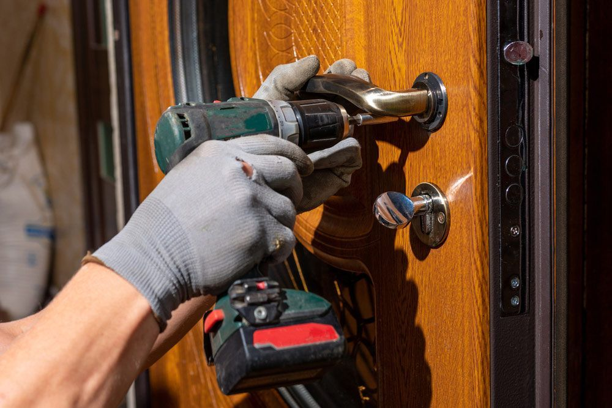
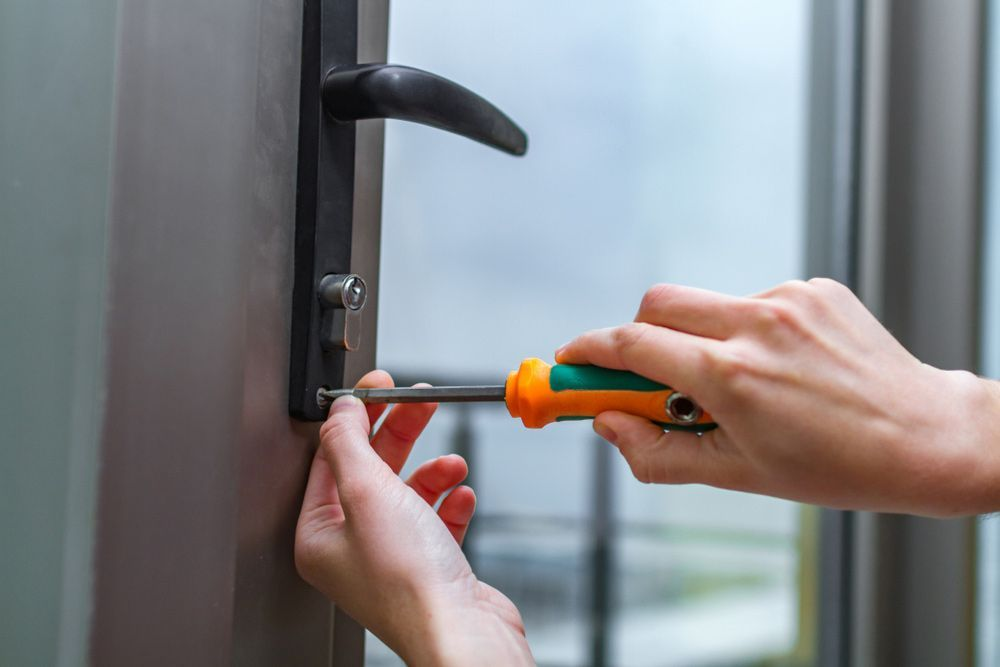
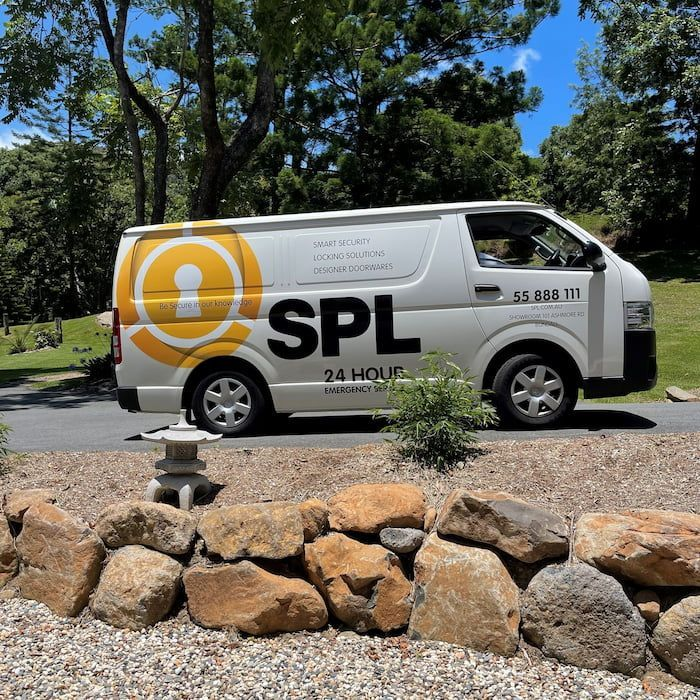

On this page
AT A GLANCE
At SPL Security Solutions, we understand that emergencies happen without warning and can be incredibly stressful.

Locksmith Services When You Need Them Most
At SPL Security Solutions, we understand that emergencies happen without warning and can be incredibly stressful. That's why we offer 24/7 emergency locksmith services to provide help when you need it most. Our team of technicians are on call at all times, ready to assist with any lockout or security issue you may encounter.
Whether it's your home, office or vehicle, we have the tools and expertise to handle a range of emergencies. If you've lost or broken your keys or suffered a break-in, we can provide you with everything needed to secure your property.
What's more, our mobile team is available to assist with electronic lock and security system emergencies. We can help with everything from electronic lock repairs and resolving access control system issues to resetting security systems.
Our prompt response time, reliable service and competitive prices make us the number one choice for emergency locksmith services throughout the Gold Coast, Brisbane and Northern NSW. Call (07) 5588 8111 to speak with our team today.
Are You Locked Out?
Getting locked out of your car, home or workplace is incredibly inconvenient and something we could all do without. Well, not to worry! For over 30 years, SPL Security Solutions has been helping people get back into their property.
Our team of mobile technicians can help you get back into your property and replace or repair locks on the spot. We use the latest techniques to gain entry without causing any damage to your locks. In an emergency, time is of the essence, so our goal is always to get you back into your property and secure it as soon as possible.


Our Emergency Locksmith Services
We offer a comprehensive range of emergency locksmith services at competitive prices including:
- 24/7 emergency callouts
- Lock opening for lock outs & gain entries
- Key duplication & programming (including transponder keys)
- Repair and replacement of locks
- Burglary repairs & re-securing a property after a break-in
- Security assessments & upgrades after a break-in
- Safe entry, combination changes & replacement
- Re-keying locks to prevent unauthorised entry